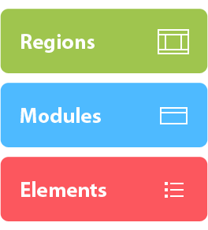

Front-end Framework

The purpose of this framework is to optimise front-end development processes and to establish well-defined and best practices accross the organisation.
The framework aims to be:
- Accessible and semantically correct
- CMS-friendly
- Developer-friendly
- Minimal and extensible
Some of the framework's benefits are:
- Faster development times
- Unified approach for front-end teams
- Easier maintenance in the short and long term
As any other framework, it might not solve every single case out there. Its main focus is on websites that require to be higly accessible.
The framework consists of three types of components. Each of them performing a particular role.
Regions
- REGIONS define the layout of a page.
- REGIONS can only contain MODULES and not ELEMENTS on their own.
- On some occasions REGIONS and MODULES can be merged into a single component. For example: a navigation module sitting on a region on its own.
Regions templates
Modules
- MODULES are areas of functionality or content that are placed inside REGIONS
- As a minimum, MODULES are made of a header section and a main section. More complex MODULES extend by adding a sidebar section and/or a footer section
- Every ELEMENT should be placed inside a MODULE. Whether the need is for a navigational menu, a login box or a piece of content always use a MODULE as the container block
- By default, and for accessibility, each MODULE starts with a heading (h2) in the header section. Depending on visual designs, this header section might be hidden or not
- MODULES are also clasified by their functionality on the page: form, nav, listing, widget, teaser these are classes added to the MODULES
- If required, MODULES can also be nested
Modules templates
Elements
- ELEMENTS are HTML elements such as headings, paragraphs, lists, tables and forms.
- ELEMENTS sit inside MODULES
Resources
Resources are snippets of code and style that are used often
Behaviour (JavaScript)
The latest version of the jQuery library is included for DOM manipulation.
behaviour.js contains snippets that add the following to the templates:
- Cookie-based style switcher to change colour scheme and font size
- Addition of accessibility toolbar for JS enabled browsers
- Addition of WAI ARIA landmark roles
- Search form UI enhancement
Notes
Best practices when implementing the framework
- Extend modules by aplying multiple classes to them
- Use consistent semantic style
- Minimise selectors
Pitfalls to avoid
- Location dependant styles
- Avoid specifying what tag a class applies
- Avoid ID's for styling objects (portability)
- Avoid height aligments
- Redundancy
- Premature optimisation
Tested on
- IE8, IE7, IE6
- Firefox 3
- Safari 4
- Opera 9
- Google Chrome 1